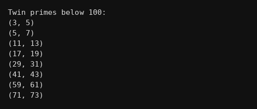

package functions;
public class Q032 {
static boolean prime(int n){
if(n<2) return false;
for(int i=2;i*i<=n;i++){
if(n%i==0) return false;
}
return true;
}
static void twin(){
for(int i=2;i<98;i++){
if(prime(i) && prime(i+2))
System.out.println("("+i+", "+(i+2)+")");
}
}
public static void main(String[] args) {
System.out.println("Twin primes below 100:");
twin();
}
}